Using the Virtual Filesystem
Introduction
ownCloud offers the possibility for users to enable a virtual file system (VFS) when synchronizing data. This has the big advantage that all files and folders are visible to the Desktop App, but the files are not downloaded until the user requests to do so. Here are some of the key benefits:
-
Full access to files and folders without having to download them all first
-
Selectively sync folders and files based on user requirements
-
Optimize space usage on the Desktop App
The quote below gives you a brief overview of what a virtual file system is about.
A virtual file system (VFS) or virtual filesystem switch is an abstract layer on top of a more concrete file system. The purpose of a VFS is to allow client applications to access different types of concrete file systems in a uniform way. A VFS can, for example, be used to access local and network storage devices transparently without the client application noticing the difference. It can be used to bridge the differences in Windows, classic Mac OS/macOS and Unix filesystems, so that applications can access files on local file systems of those types without having to know what type of file system they are accessing.
Microsoft VFS Implementation
Background
A sync engine is a service that syncs files, typically between a remote host and a local client. Sync engines on Windows often present those files to the user through the Windows file system and File Explorer.
- Full pinned file
-
The file has been hydrated explicitly by the user through File Explorer and is guaranteed to be available offline.
- Full file
-
The file has been hydrated implicitly and could be dehydrated by the system if space is needed.
- Placeholder file
-
An empty representation of the file and only available if the sync service is available.
The following image demonstrates how the full pinned, full and placeholder file states are shown in File Explorer.
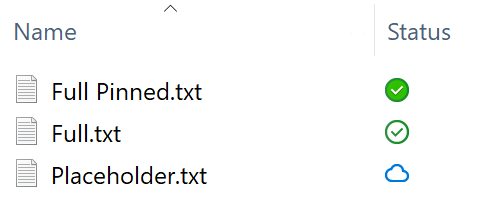
Limitations and Restrictions
Limitations
A virtual file system needs a root folder all synchronization items will be stored in. The following locations are not allowed as synchronization root:
-
The root of a disk like
D:\ -
A non-NTFS Filesystem
-
Mounted network shares
-
Symbolic links or junction points
-
Assigned drives
Restrictions
Similar to OneDrive as it also uses Microsoft’s virtual file system, there are some additional restrictions which should be considered like the maximum file size, invalid file or folder names, etc. See the Restrictions and limitations in OneDrive and SharePoint for more information.
ownCloud VFS Implementation
Note that when using Windows and VFS, the Desktop app needs full control of the sync folder and its subsequent folders where the data gets stored. If this is not the case, access denied errors most likely will occur when syncing VFS data. For more details see the troubleshooting section.
New Sync with VFS enabled
To set up a new synchronization with virtual file system enabled, perform the following steps:
-
Add a new synchronization by clicking the + Add account button.
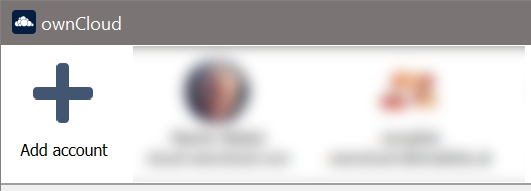
-
Enter the server address and your credentials in the following dialogs.
-
Select the radio button Use virtual files and set the local folder where your synchronization data will reside.
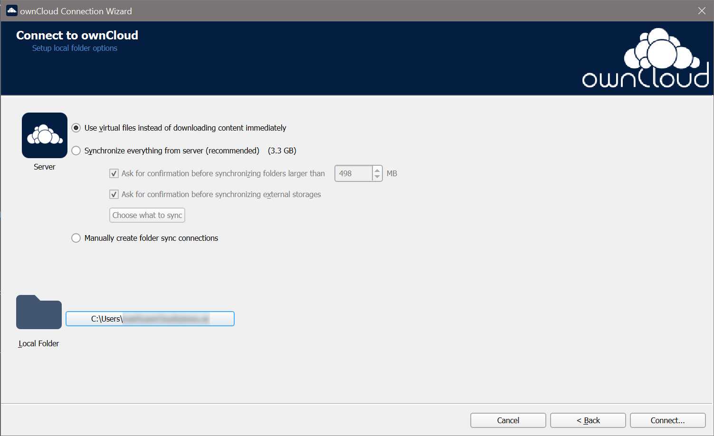
-
When everything is done, you should see a similar screen as below, showing that the setup completed successfully.
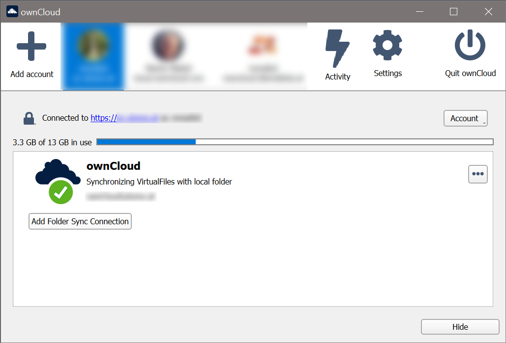
-
After the first sync, your synchronization folder will show your items with the Placeholder icon.
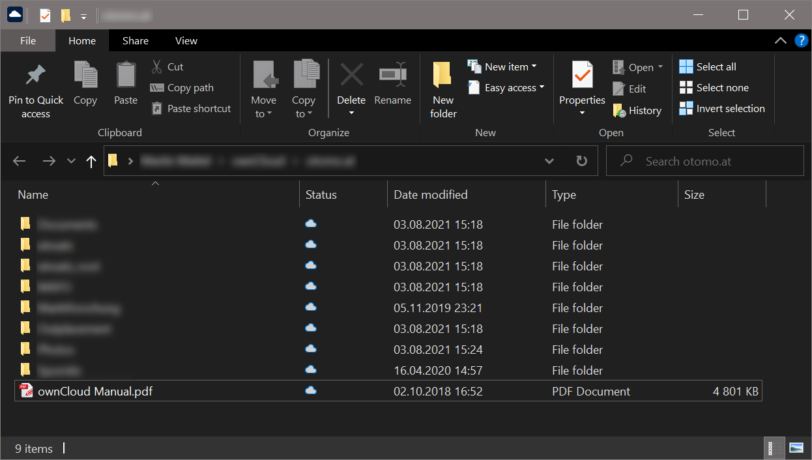
-
When opening a file, the file gets downloaded and its synchronization icon changes to Full.
Convert Full Sync to VFS
If you have full synchronization enabled, you can change to a virtual file system at any time.
-
Open your existing synchronization, click the … button and Enable virtual file support.
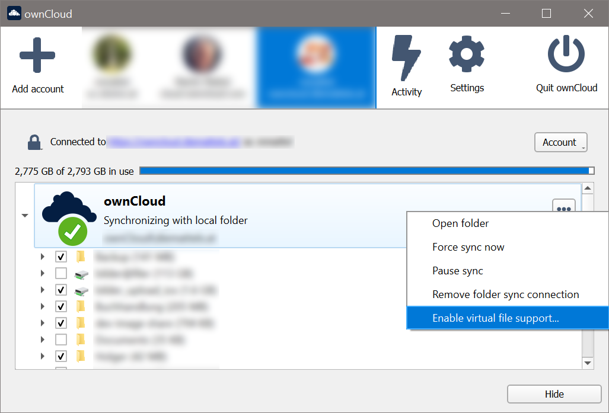
-
Your local files will get replaced by placeholders, thus freeing up the space previously occupied.
Convert VFS to Full Sync
You can also change the synchronization setting from virtual file system to full sync.
-
Open your existing synchronization, click the … button and Disable virtual file support.
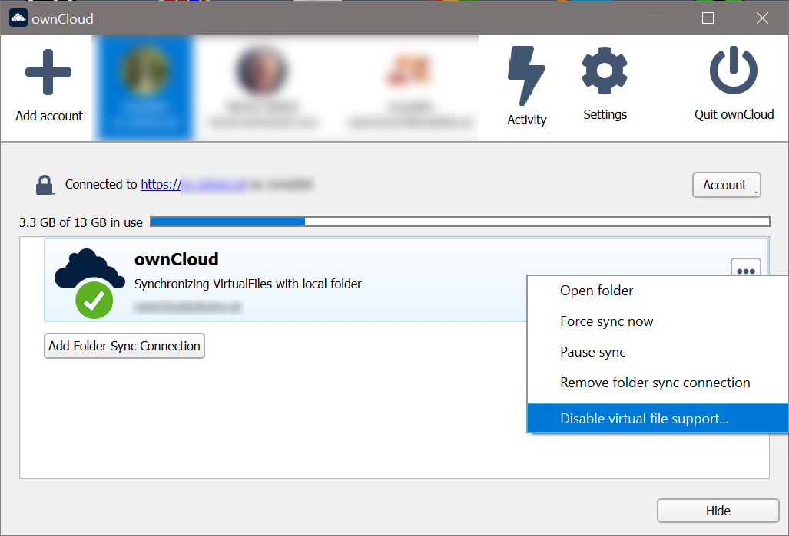
-
A notification window will ask you to confirm before completing the conversion.
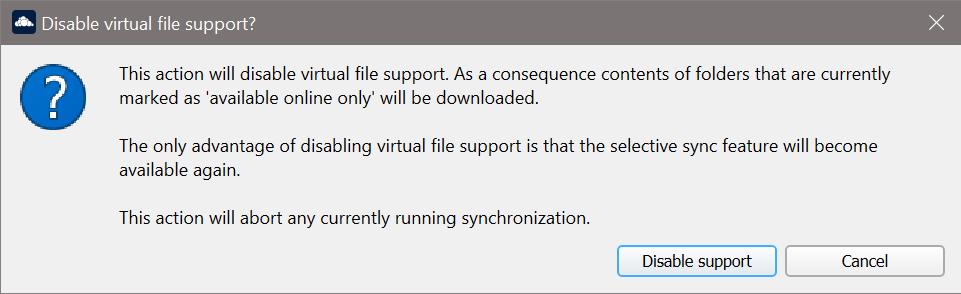
-
When done, your files will be fully downloaded, which you can tell by the sync icons, see the example image below. Depending on the quantity and size of the files, this may take a while.
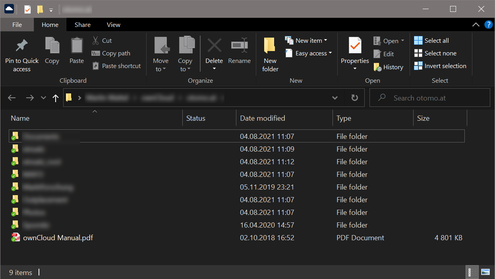
Manage VFS from Windows Explorer
You can manage individual files or complete folders in the Explorer window by right-clicking on them. This opens a drop-down menu of actions that can be performed on a specific file or folder. The following example shows this on files, but it can be applied on folders too.
Using attrib.exe to Manage States
Experienced users can also manage VFS states via the command line using attrib. This is particularly useful if you want to change the state of a complete folder/subfolder. Open a PowerShell command line window like via the start menu and change to the directory of the ownCloud sync folder/subfolder that contains the data you want to bulk change.
Use the following command for help and to adapt switches according to your needs.
attrib /?-
Make a set of files or folders always available including subfolders:
attrib -U +P .\* /D /S -
Make a set of files or folders only online available, including subfolders:
attrib +U -P .\* /D /S
Manage Drive Space With Storage Sense
Microsoft provides a mechanism called Storage Sense which can automatically free up drive space for applications that use VFS. This is done by turning files that were set to be locally available back to cloud-based content, which are placeholder files on the local drive, requiring no space.
You can enable or disable Storage Sense via Windows :
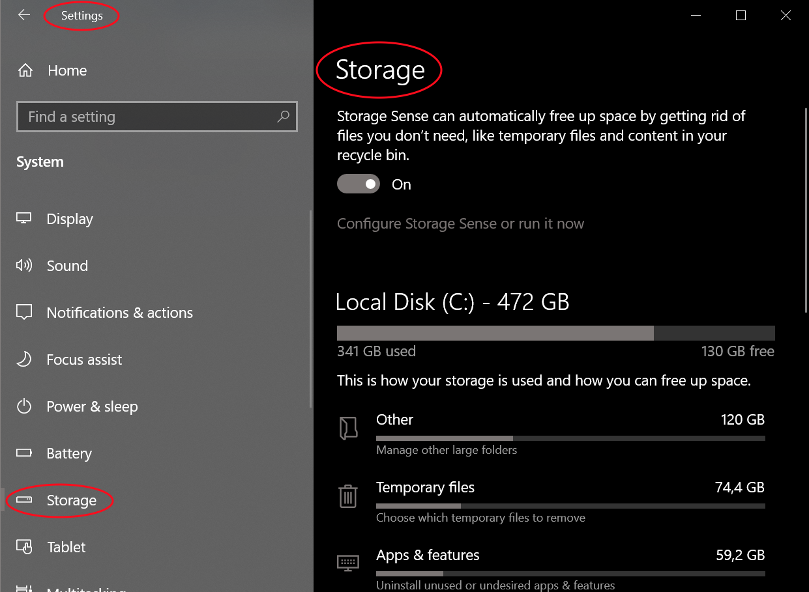
and configure the general behavior or each VFS relationship individually via the following section:
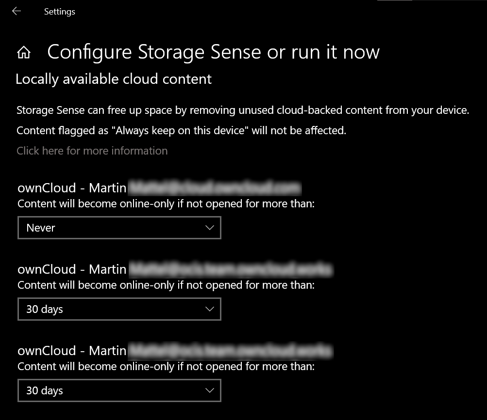